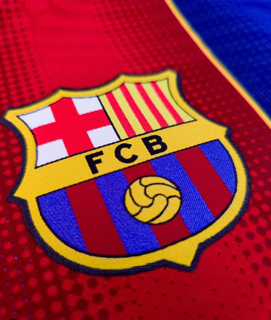
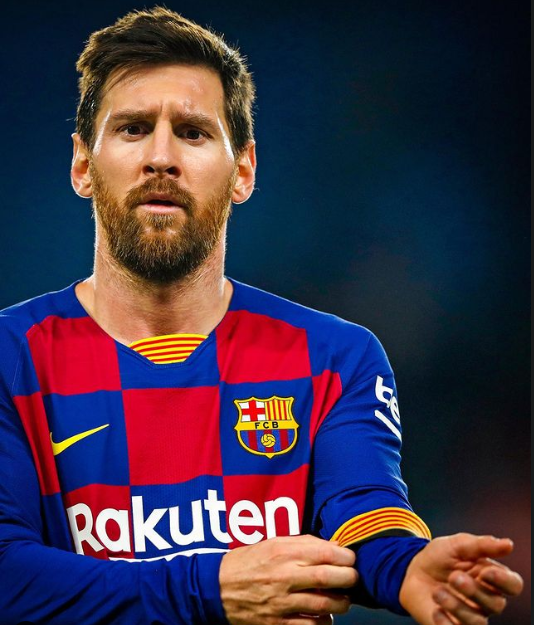
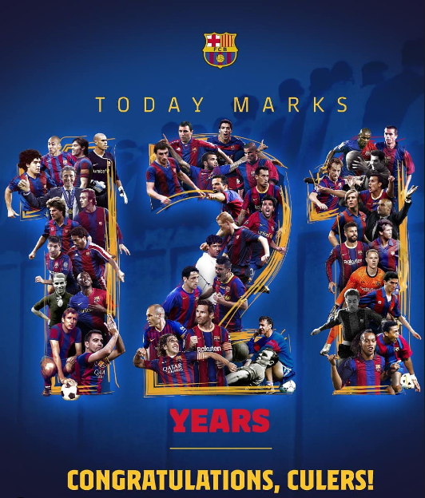

Oh, le, le! Oh, la, la! Ser del Barça es, El millor que hi ha...
Oh, le, le! Oh, la, la! Ser del Barça es, El millor que hi ha...

El escudo inmortal
Era el escudo de la ciudad de Barcelona, embaldosado con cuatro cuartos. Arriba lucía una corona y un murciélago, y estaba rodeado por dos ramas, una de laurel y otra de palmera. Era una forma de expresar, desde buen principio, la vinculación del club con la ciudad que le vio nacer.
Este escudo estuvo vigente hasta el año 1910. Después de que Gamper salvara el club de la profunda crisis de 1908, los intentos de proporcionarle a la entidad un escudo propio y diferenciado dieron sus frutos. En 1910, el Barça convocó un concurso abierto a todos los socios que tuvieran propuestas. Ganó el dibujo de Santiago Femenia, que había jugado a fútbol en Internacional y Barça, y era socio del club. Así nació el escudo que el club ha lucido desde entonces, con pocas variaciones.
La forma actual del escudo corresponde a la adaptación que hizo, en el año 2002, el diseñador Claret Serrahima, que se decantó por unas líneas más estilizadas, suprimió los puntos que separaban las iniciales del club, abrevió el nombre y redujo el número de puntas. Cabe decir que este escudo presenta unas líneas más sencillas, que facilitan su reproducción en todos los formatos de la identidad corporativa de la entidad.

Simplemente Leo messi
Messi (Rosario, Argentina, 24 de junio de 1987) es el mejor jugador de fútbol de todos los tiempos y el hombre récord del FC Barcelona. Educado en La Masía, su figura estará siempre ligada a la historia del Barça como el mejor jugador que nunca ha vestido la camiseta azulgrana.
A título individual, Messi no ha parado de romper récords con el Barça desde muy joven. Es el jugador que más partidos ha jugado (778), el que más goles ha convertido (672), el que más asistencias ha hecho (305) y el que más títulos ha conquistado (35).
Fue en el verano de 2021 cuando finaliza la historia de amor entre el FC Barcelona y Leo Messi. El '10' del Barça cierra su trayectoria en el Club convertido en el hombre récord de la historia del FC Barcelona y en mito eterno del barcelonismo.
Trayectoria en el club (Gràcies-Lionel)
Temporadas en el Club: 2003-2021
Partidos jugados: 778
Goles marcados: 672
3 Mundiales de Clubes de la FIFA
4 UEFA Champions League
3 Supercopas de Europa
10 Ligas
7 Copas del Rey
8 Supercopas de España

La historia del BARÇA
El 29 de noviembre de 1899 se produjo una reunión en el ‘Gimnàs Solé’ de Barcelona donde once personas se unieron a la llamada de Joan Gamper y fundaron el FC Barcelona. Este domingo el Barça y todos sus millones de socios y aficionados de todo el mundo están de enhorabuena y de celebración ya que se cumplen 121 años de su fundación.
Otto Kunzle, Walter Wild, John y William Parsons, Otto Maier, Lluís d’Ossó, Bartomeu Terrades, Enric Ducay, Pere Cabot, Carles Pujol y Josep Llobet acompañaron a Gamper para poner lo que sería el punto de partida a una historia centenaria plagada de éxitos en todas las disciplinas, siendo en diferentes etapas el mejor equipo del mundo en varias de ellas y siempre respetando el que con los años se ha convertido en un lema que pone de manifiesto la singularidad del Barça, el ‘més que un club’.
A lo largo de estos 121 años el club ha visto pasar a grandes cracks mundiales que han vestido la camiseta azulgrana. De los considerados mejores futbolistas de la historia, muchos de ellos han pasado por el Barça. Kubala, Di Stefano, Cruyff, Maradona o Messi, entre muchos otros cracks que han dejado su huella en la dilatada historia azulgrana.